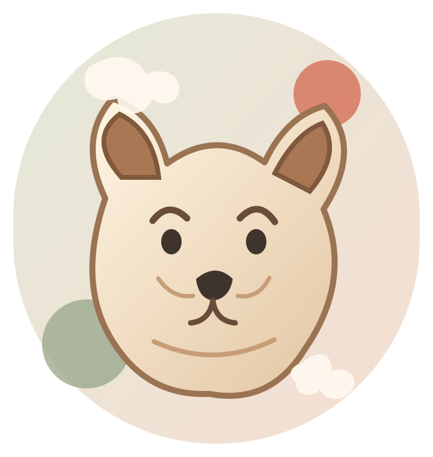

Talk about your dog
Share your dog’s coat, grooming routine, temperament, and any concerns when you call.
A thoughtful starting point for dog owners looking for grooming care. Get in touch to talk through your dog’s needs and the next step.

This concept keeps the essentials easy to find while leaving room for the groomer to explain what is suitable for each dog.
Share your dog’s coat, grooming routine, temperament, and any concerns when you call.
Ask which grooming option fits your dog and what details are needed before an appointment.
Use the direct call button rather than searching through social profiles or third-party listings.
A small business website should answer the first questions quickly: what the business does, how to get in touch, and what to do next. This design gives those actions a clear place without inventing a service menu or prices.
Phone is the verified public contact route. Ask about suitable services, availability, pricing, and the best way to book.
Location note: the available public listing gives Dorchester Ave, Ottawa, ON K1Z 8E9, but not a confirmed street number. Confirm directions directly before visiting.
Only details that can be answered without making up policies are included here.
Call (613) 668-4089 to discuss your dog’s needs and ask about service options, pricing, and availability.
The public information reviewed for this concept does not provide a confirmed service menu or exact prices. Please confirm both directly with the business.
The public listing identifies Dorchester Ave, Ottawa, Ontario. A specific street number was not confirmed, so call before visiting or use the Maps listing for the latest details.